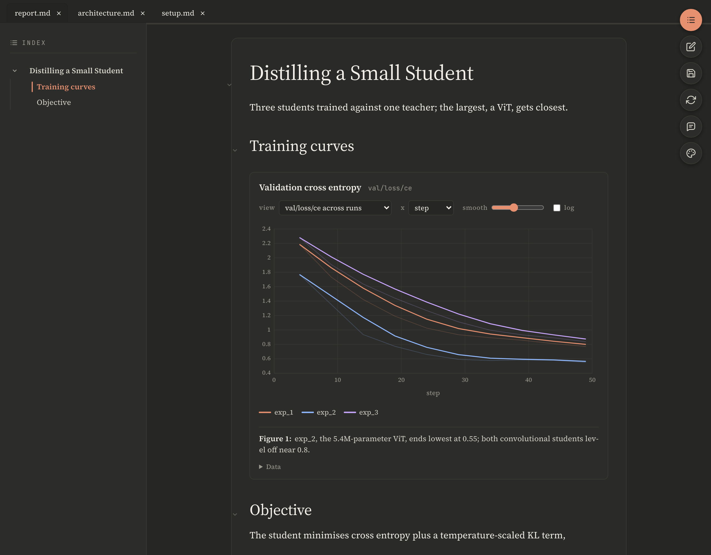
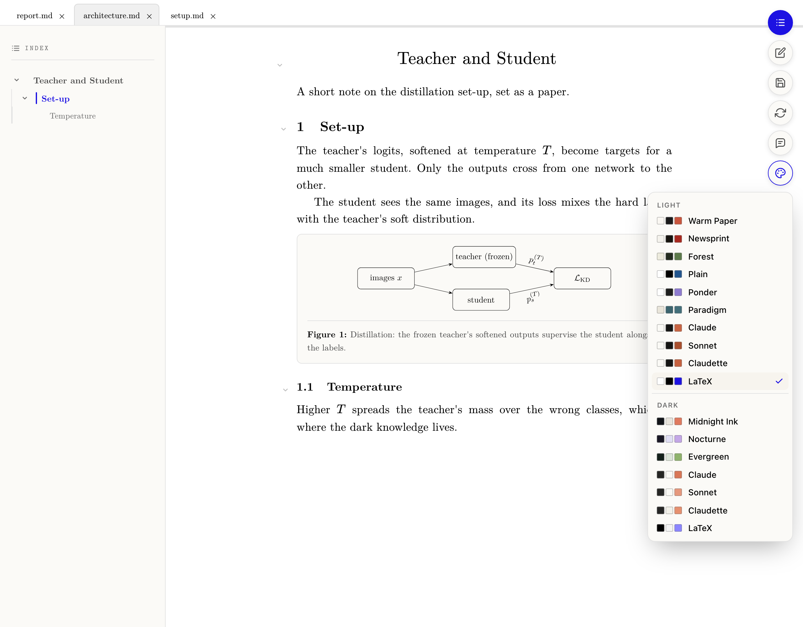

Markdown, set like a book.
A markdown renderer with book typography — seventeen themes, a document index, math, Mermaid, review comments — in a desktop window or served to your browser over SSH.


Overview
MD_RENDER opens .md and .markdown files and sets
them in serious book typography. It is a small Tauri app: a Rust core with a
React reading surface, built for macOS and Linux.
- Seventeen typographic themes — ten light and seven dark, including light and dark Claude, Sonnet, Claudette and LaTeX after Typora themes — each with its own faces, colors and code palette
- Collapsible document index built from headings, with scroll-spy and a reading-progress bar
- Several files open as tabs — in the window or in the browser
- GitHub-flavored markdown, KaTeX math, Mermaid diagrams, syntax-highlighted code, local images
- Experiment plots: a
<plot>block draws line, bar, spider, histogram and scatter charts from trackio (wandb-compatible) logs, with views derived from the metric names and live refresh - TikZ diagrams compiled by a built-in LaTeX engine: tikz-cd, pgfplots and circuitikz with no TeX installation, cached and theme-aware
- Markdown written for MathJax renders as it does there:
\(…\)and\[…\]delimiters, bare\begin{align}blocks, AMS equation numbering,\labeland\eqref - Split-pane editor with save, 30-second autosave, and save-on-close
- Review comments attached to selected passages, stored in the markdown itself, with clean export: open the comments pane and highlight a passage
- Server mode: the same app served over HTTP, with the same editing
Install
One line — detects the platform, checks prerequisites, clones and runs
make install. No sudo; if build tools are missing it says
which ones and stops.
curl -fsSL https://aadityasalgarkar.github.io/md_render/install.sh | shOr grab a build from
Releases
— dmg for macOS (unsigned; right-click → Open the first time), deb, rpm or
AppImage for Linux. Or by hand: make install detects the
platform and installs the right thing. Both installs also place the
mdrender wrapper at ~/bin/mdrender.
macOS
git clone https://github.com/AadityaSalgarkar/md_render
cd md_render
npm install
make install # builds and installs MD_RENDER.app + ~/bin/mdrenderTo make it the default app for markdown:
brew install duti && duti -s com.mdrender.app .md all
Linux
Build prerequisites on Debian/Ubuntu (names differ on other distros), plus Rust via rustup and Node:
sudo apt install build-essential curl wget file pkg-config \
libwebkit2gtk-4.1-dev libxdo-dev libssl-dev \
libayatana-appindicator3-dev librsvg2-dev libgtk-3-devgit clone https://github.com/AadityaSalgarkar/md_render
cd md_render
npm install
make install # everything under ~/.local and ~/bin — no root| Path | Contents |
|---|---|
~/.local/bin/md-render | application binary |
~/bin/mdrender | command-line wrapper |
~/.local/share/applications/md-render.desktop | desktop entry, .md association |
~/.local/share/icons/hicolor/*/apps/ | icons |
npm run tauri:build also emits .deb,
.rpm and .AppImage bundles under
src-tauri/target/release/bundle/. Set PREFIX to
install elsewhere: make install-linux PREFIX=/usr/local.
Clusters and shared machines
Without WebKit (a cluster login node, a server), the installer puts in
the headless server prebuilt: no compiler, root, Docker or
LD_LIBRARY_PATH, on any glibc 2.28+ x86_64 or aarch64 Linux.
Keep it and its caches off $HOME:
export MDRENDER_PREFIX=/scratch/$USER/md-render
export XDG_STATE_HOME=$MDRENDER_PREFIX/state XDG_CACHE_HOME=$MDRENDER_PREFIX/cache \
XDG_CONFIG_HOME=$MDRENDER_PREFIX/config
curl -fsSL https://aadityasalgarkar.github.io/md_render/install.sh | MDRENDER_SERVER=1 sh
$MDRENDER_PREFIX/bin/mdrender --port 9999 ~/project
ssh -L 9999:127.0.0.1:9999 <host> # on your laptop, then open http://127.0.0.1:9999/Another user's server on the same node is skipped when picking a port.
No GitHub access: copy the release's
md-render-server-<version>-linux-<arch>.tar.gz over
and install with MDRENDER_TARBALL=<file>.
MDRENDER_SERVER=build compiles it instead
(make install-server), finding the TeX libraries through
PKG_CONFIG_PATH.
Command line
mdrender notes.md # serve it and open the browser
mdrender a.md b.md ./docs # several files and a directory — tabs
mdrender # the current directory
mdrender --app notes.md # the desktop window instead
mdrender --port notes.md # serve in the foreground, no browser (headless)
mdrender --mcp # MCP server over stdio, for agents
mdrender https://github.com/anthropics/skills/blob/main/README.md # from the internetThe default starts a server on port 9999, or joins the one already there, opens the first document in your browser, and returns with the server left running in the background.
A URL works wherever a path does, in the window and in the browser: the
document is downloaded under
/tmp/md-render/remote (GitHub file pages as their raw content,
one directory per repository so its files share a workspace) and opened
from there. Naming the URL again re-opens the same tab; the refresh control
downloads it again. Since /tmp gets cleared, a saved edit is
also kept under ~/.config/mdrender/temp_files/, and that copy
is what opens and what a refresh restores until you delete it.
Directory arguments contribute every markdown file beneath them, recursively, in stable sorted order. The window and the server build their tabs from the same list, so the same arguments produce the same result in either mode.
The refresh control in the app rescans those directories, so markdown added after launch appears as a new tab. Files opened from the file manager or via a link join the tab strip rather than replacing the open document.
Server mode
The browser is the default: mdrender notes.md serves the
app over HTTP and opens it. The port defaults to 9999,
falling forward to the next free port; --port pins one and
keeps the server in the foreground with no browser opened, for headless
machines and scripts: mdrender --port 8080 notes.md. Each
directory becomes a workspace at /<dirname>/. Everything
works as it does in the window — tabs, index, themes, math, diagrams,
images, and editing and saving back to disk.
Running the command again while a server already holds the port adds the file as another tab rather than failing, and focuses the browser on it:
$ mdrender extra.md
added to http://127.0.0.1:9999
extra.md
opening http://127.0.0.1:9999/project/?doc=5 in the browserAn open browser picks the new tab up within a few seconds, no reload.
MDRENDER_BROWSER names the opener (empty disables it);
MDRENDER_FOREGROUND=1 keeps the default mode in the
foreground.
Reading over SSH
The main reason the mode exists: the machine rendering the markdown needs no display.
ssh -L 9999:127.0.0.1:9999 my-server
mdrender --port ~/notes.md # on the serverThen open http://127.0.0.1:9999 in your local browser.
What the server touches
Server mode can edit and save, so its reach is bounded deliberately:
- Binds
127.0.0.1by default.--hostoverrides it and prints a warning, since any other address exposes your files — and the ability to edit them — to the network. - Reads and writes are limited to the documents the server was told to open. Sitting inside a served directory is not enough; a stray file next to your markdown cannot be read or overwritten.
- Images are served only from the directories of open documents, and
only with image extensions. Paths are resolved before checking, so
..and symlinks cannot escape. - Every write carries a token the server injects into the page it serves. A page on another origin cannot read that token, so it cannot forge a write.
- Changing what a running server does from outside the page — adding
or closing tabs and workspaces, steering the view, stopping it — requires
the token from
$XDG_STATE_HOME/md-render/servers/<port>.json, written with mode0600— only processes running as the same user (the MCP server included) can widen what the server touches.
Editing & comments
The editor pane sits beside the preview behind a draggable divider. With a file open, Save writes immediately; unsaved edits also autosave every 30 seconds and before the window closes. When nothing is waiting to save, the same sync refreshes the preview from disk, so edits made elsewhere show up.
Select any passage in the preview to attach a review comment. Comments
live in the markdown itself as <chat> blocks beside the
text they discuss, so they travel with the file and survive any editor.
Export clean .md writes a copy with every comment stripped —
notes.md becomes notes.clean.md next to it.
Themes
Chosen from the palette control, a dropdown of light and dark themes, each shown by its page, text and accent colours; the choice is remembered. Each theme is a full set of faces, surfaces and a code palette. This page wears Claudette Dark — the palette button above switches it to Claudette.
| Light | Dark | ||
|---|---|---|---|
| Warm Paper — book typography on aged cream | Midnight Ink — warm ink on blue-black | ||
| Newsprint — high-contrast editorial broadsheet | Nocturne — muted iris & foam on plum | ||
| Forest — moss and bark on a sage page | Evergreen — moss and amber on pine-black | ||
| Plain — bare Helvetica on white, blue links, nothing else | Claude — the same on warm charcoal | ||
| Ponder — system sans on white with a violet accent, code in Google Sans Code | Sonnet — Georgia on charcoal, bold words in coral | ||
| Paradigm — Literata in dark teal on warm stone, section heads in Geist Mono capitals, teal-filled inline code | Claudette — the same sheet after dark | ||
| Claude — Lora on warm ivory, compact headings, links that warm to terracotta | LaTeX — the article on black | ||
| Sonnet — Georgia on ivory, rust links, wavy clay highlights | |||
| Claudette — a white sheet on ivory in Source Serif, hairline code with a language pill | |||
| LaTeX — an article in New Computer Modern: numbered sections, indents, booktabs tables |
Claude, Sonnet, Claudette and LaTeX follow Typora themes by Tsumugii24, bexino, CookPiu and shamsghi; see THIRD_PARTY_NOTICES.md.
Claude Code integration
MD_RENDER ships an MCP server that drives the
--port mode, so an agent can do everything a reader does by
hand in the browser. Register it once:
claude mcp add mdrender -- mdrender --mcpor in a project's .mcp.json:
{ "mcpServers": { "mdrender": { "command": "mdrender", "args": ["--mcp"] } } }Tools: list_servers, start_server,
stop_server; list_workspaces,
open_directory, close_workspace;
list_tabs, open_tab, close_tab,
refresh; read_document,
write_document, add_comment,
export_clean; focus_tab, set_theme.
Every result names the URL to hand the human, and an open browser follows
within a few seconds — a tab the agent opens appears, a tab it focuses
comes to the front, a theme it sets applies. make install
puts the bundled server at
~/.local/share/md-render/mcp/index.js; it needs
node.
Separately, a small PostToolUse hook opens plan files in the desktop window the moment Claude Code writes them:
#!/bin/bash
# ~/.claude/hooks/open-plan-in-md-render.sh
INPUT=$(cat)
FILE_PATH=$(echo "$INPUT" | jq -r '.tool_input.file_path // empty')
if [[ "$FILE_PATH" == ~/.claude/plans/* ]]; then
~/bin/mdrender "$FILE_PATH" 2>/dev/null &
fi
exit 0Register it in ~/.claude/settings.json under
hooks.PostToolUse with matcher Write. See
skills.md for a ready-made skill covering both.
Development
npm run tauri:dev # Tauri window + Vite dev server
npm run tauri:build # production build and bundles
npm run dev # frontend only, in a browser
make test # Rust + frontend test suites
npm run lintThe frontend is React 18 + TypeScript on Vite, markdown via
react-markdown with remark-gfm, remark-math, rehype-katex, rehype-highlight
and rehype-raw. The Rust side is Tauri 2 plus an axum server for
--port. Tests run against the real binary over real HTTP —
nothing in the suites mocks the code under test.
A note for builders: a plain cargo build --release emits
target/release/app, which expects the dev server and shows a
blank “could not connect” window. The usable binary comes from
npm run tauri:build, as target/release/md-render.
For machines
Two plain-text files describe this project to language models and agents:
- llms.txt — a compact map of the project for LLMs, following llmstxt.org
- skills.md — a drop-in skill teaching an agent to render and serve markdown with MD_RENDER
mdrender --mcp— the MCP server, for agents that would rather call tools than shell out